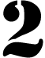

Возьмите несколько (не менее пяти) любых картинок. Сопоставьте каждую с элементом radio. Сделайте так, чтобы на Вашей странице отображалась только одна картинка и несколько radio. При нажатии на radio появляется картинка около него, при этом исчезает предыдущая показанная.
